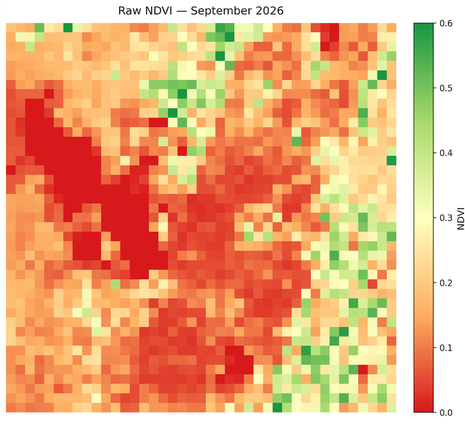
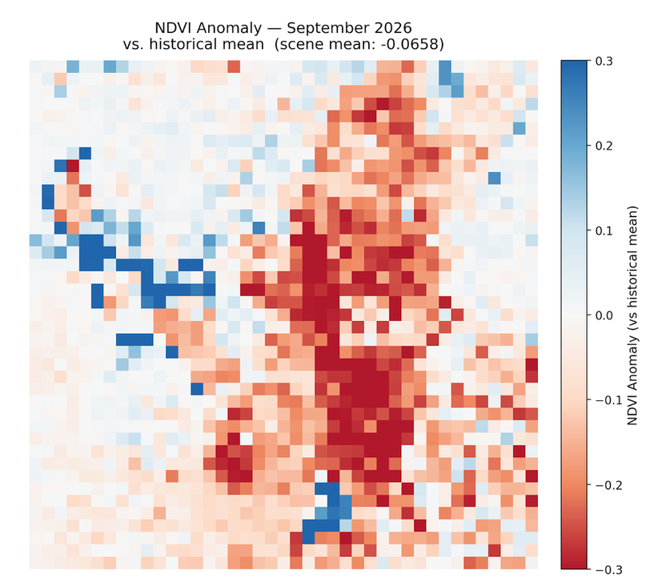
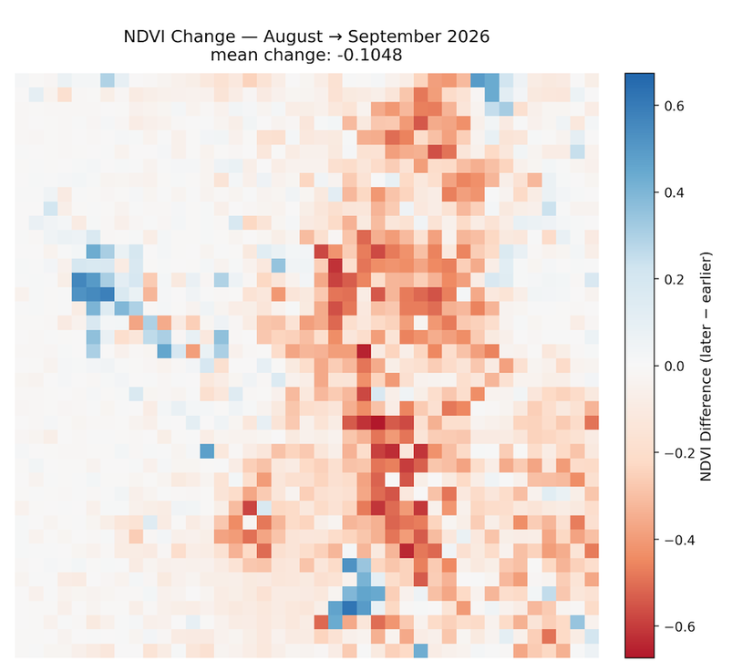
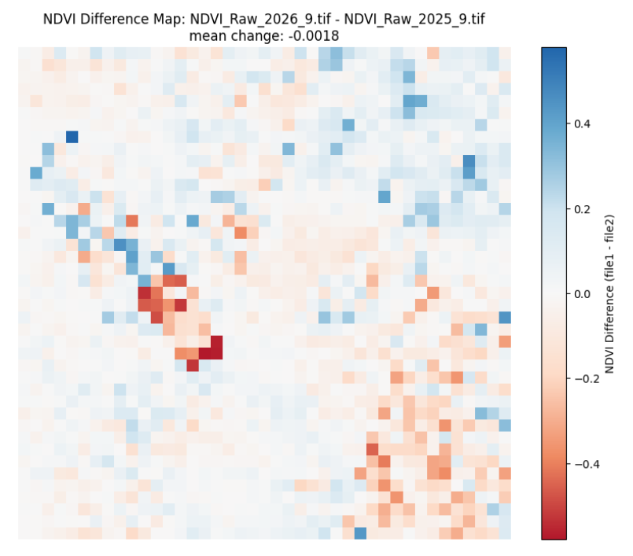
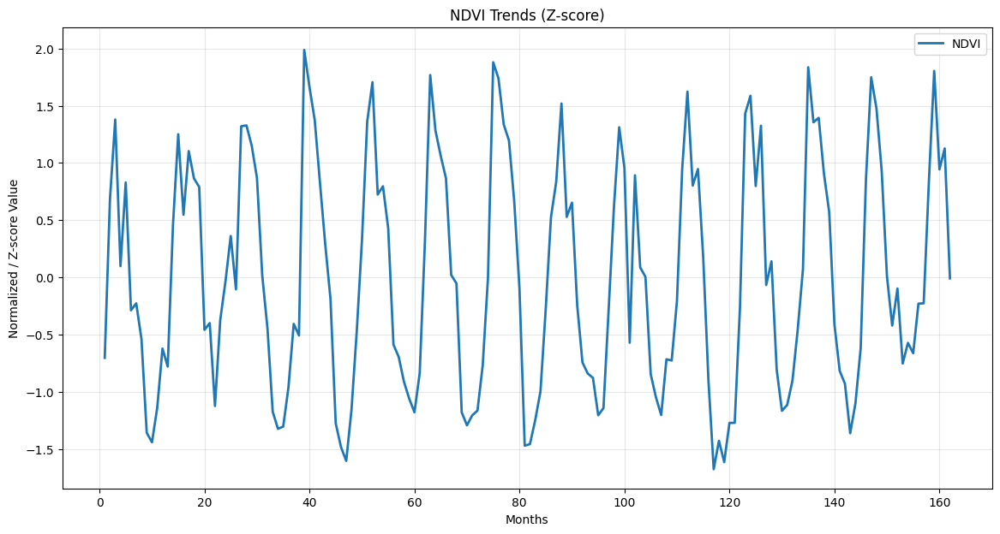

Monthly Report · Issue 10
September 2026
Vegetation dynamics across the Wasatch Front
By Scott Vars
Published October 28, 2026
Vegetation dynamics across the Wasatch Front
By Scott Vars
Published October 28, 2026
This map shows the raw vegetation index across the Wasatch Front for September 2026. The usual divide between the higher elevation, mountainous regions and the lower elevation or urban regions is still there, but it is a lot less pronounced than it was last month. In August, the high country was pushing 0.5-0.6 in terms of NDVI. Now, most of it sits somewhere in the 0.3-0.45 range, with only a handful of scattered pixels in the northeast and southeast still reaching 0.5-0.6. The band running down the middle of the scene has dropped even further, with a lot of it now sitting around 0.05-0.15. The lower elevations are roughly where they were, around the 0.15-0.25 range. The lake values (Great Salt Lake and Utah Lake) sit at 0, as normal. So the big story here is that the greener, higher elevation areas have lost a lot of their vegetation in just one month, while the valley floor has barely moved. Some decline is expected this time of year, but the size of this drop is pretty striking, especially coming right off of August's increase.

NDVI was well below average for September 2026, with a scene-mean anomaly of about -0.0658 relative to the historical September mean. That is a big swing from August's +0.0210, and it even sits below July's -0.0304. Since this is a deseasonalized map, the typical seasonal decline is already accounted for, so this isn't just September being September. Looking at where the red actually is on the map, it is concentrated in the higher elevation band down the middle and east side of the scene, while the lower elevations are mostly washed out near zero. Splitting the scene by elevation confirms this. High-elevation raw NDVI dropped from about 0.36 in August to about 0.20 in September, while the historical mean for those areas stayed near 0.32. That is an anomaly of roughly -0.12. Low elevation, on the other hand, barely moved, with an anomaly of about -0.02. So this is very much a high country event, and not a uniform return to the drought baseline we saw earlier in the year. (The blue patches along the edge of the Great Salt Lake and around Utah Lake are likely remote sensing artifacts, more on that below.)
The most consistent explanation is a compressed high-elevation growing season, with a temporary rain-driven interruption in the middle of it. Going back through the past few reports, the story lines up pretty well. The low-snow, warm winter pushed high-elevation green-up about a month early, and NDVI actually overshot the historical June peak (about 0.46 vs. 0.415) before it started declining in July. With record-low snowpack and runoff, the summer was moisture-stressed, and July's high-elevation anomaly reached about -0.07. Then in August, the monsoon rains lifted high-elevation NDVI to about +0.04 above the historical mean, most likely from fast-responding vegetation. Looking back now, August was a pulse, not a recovery. It didn't restart the season. And September is simply the end of that season. With the biological clock already running about a month ahead, high-elevation vegetation has entered fall senescence while the historical mean is still holding near its late-summer plateau. The August bump vanished and the early season end showed up in the same composite, which is why September looks like such an overcorrection.
It is also worth noting that this probably isn't a moisture problem. Mountain precipitation in September was reportedly about 138% of median statewide, so the high country was not short on water this month. Rain doesn't reverse senescence though, so the drop points to timing, not water supply. This is the scenario last month's report hinted at, where vegetation self-corrects hard once the rains stop mattering, but the mechanism is a little different than expected: it isn't the rain going away, it's the season itself ending early.
A sharp drop in high-elevation vegetation across the Wasatch Front in September 2026, likely an early end to a growing season that started about a month ahead of schedule, not a lack of moisture.

NDVI dropped sharply from August to September 2026, with a mean change of -0.1048 across the Wasatch Front region. This completely erases August's +0.0169 gain and then some. Some decline is normal this time of year, as August and September typically drop quite quickly as we transition to a colder, more Autumn environment, but this is a big one. The difference map makes it pretty clear where the loss is coming from: the heaviest red runs straight down the middle of the scene and into the east, right through the high country, with some of the strongest pixels reaching -0.5 to -0.6. The western half of the scene and the valley floor are mostly pale, meaning they barely changed. Once again, this matches the elevation split from the anomaly section. The higher elevation vegetation that got the boost from the monsoon rains in August is now the vegetation shutting down for the year. The blue patches on the west side and near the bottom center of the map sit right over the Great Salt Lake and Utah Lake, so those should be disregarded (see below).

Any sharp isolated changes over the open water of the Great Salt Lake, Bear Lake, or Utah Lake are likely remote sensing artifacts and should be disregarded. They are generally not real readings; when cross-checked against the raw NDVI maps, the lake pixels did not meaningfully change.
Compared to September 2025, NDVI is essentially flat, with a mean change of just -0.0018 across the Wasatch Front. Most of the map is near zero, with some scattered gains in the north and northeast and some scattered losses in the southeast. The cluster of strong red in the west-center sits along the Great Salt Lake, so that is most likely another artifact. This is actually a pretty interesting result. Given the -0.0658 anomaly against the historical mean, being basically even with last year suggests September 2025 was also running below the historical September average, which lines up with last year also being a dry year. So while September 2026 looks rough compared to the long-term record, it isn't really any worse than last year. It just got there through a very different path: an early start, a stressed summer, a monsoon pulse, and an early finish.

Looking at the updated NDVI trends, September 2026 drops off hard from August, falling from a z-score of about 1.1 down to roughly 0. That is one of the steeper single-month drops at this point in the season across the whole 2013-2026 record. Last month, the forecast (which was admittedly largely theoretical) was that September may crash hard as vegetation self-corrects, if the monsoon rains were truly an anomaly reserved for August. That crash did happen, but the rains didn't actually stop, as mountain precipitation was well above median in September. So the forecast was right about the outcome, but not quite for the right reason. The decline is being driven by the season's timing rather than a lack of water. Going into October, it would be reasonable to expect the high country to keep declining at a normal or slightly faster than normal pace, since it is already about a month into its fall transition. Whether the El Niño conditions forecast across the Western United States change anything is still an open question, but at this point in the year, more rain is unlikely to bring the vegetation back.

September 2026 undoes August's surprise and then some. NDVI across the Wasatch Front fell -0.1048 month-over-month from August, and the scene-mean anomaly dropped to -0.0658 against the 2013-2026 historical September mean, down from +0.0210 in August and below July's -0.0304. Year-over-year, the scene is essentially flat at -0.0018, which suggests September 2025 was also running below the historical average. The loss is not spread evenly. High-elevation raw NDVI fell from about 0.36 to about 0.20 while its historical mean held near 0.32, an anomaly of roughly -0.12, while low elevation barely moved at about -0.02. This is a high country event, not a uniform slide back to the drought baseline.
The leading explanation is a compressed high-elevation growing season with a temporary rain-driven interruption. The low-snow, warm winter pushed green-up about a month early, NDVI overshot the historical June peak, and the moisture-stressed summer took July's high-elevation anomaly to about -0.07. August's monsoon rains lifted the high country to about +0.04 above its historical mean, but that was a pulse from fast-responding vegetation, not a recovery. With its biological clock still a month ahead, the high country entered fall senescence in September while the historical mean was still holding at its late-summer plateau, so the August bump and the early season end landed in the same composite. Moisture does not appear to be the problem, as mountain precipitation was reportedly around 138% of median statewide in September. Rain doesn't reverse senescence, so the drop points to timing, not water supply. October should show whether the high country simply continues an early but otherwise normal fall decline.
NDVI values derived from Landsat 8 TOA median composites at 5.5km resolution. Difference maps computed from raw NDVI prior to any normalization. Historical comparisons use the 2013–2026 Landsat archive.
Landsat 8/9 imagery courtesy of the U.S. Geological Survey via Google Earth Engine.
NOAA National Centers for Environmental Information, Monthly Climate Reports and drought summaries.